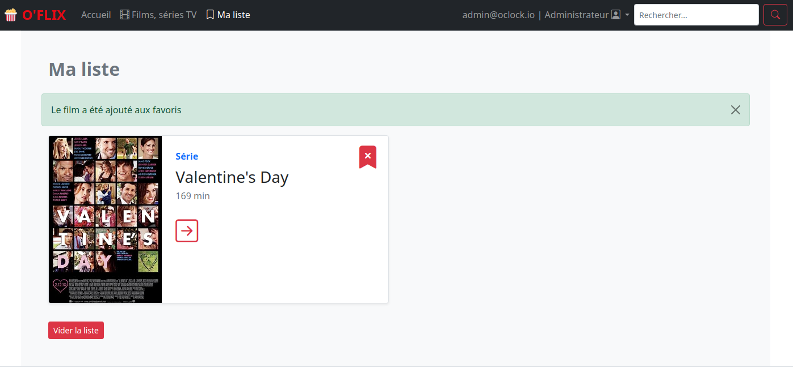
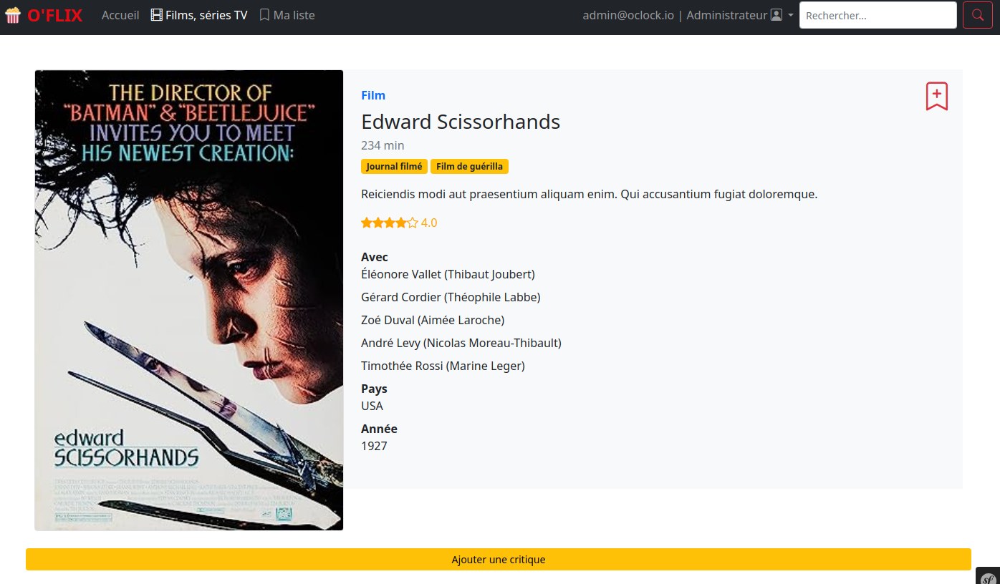

Oflix
Mon premier projet réalisé avec Symfony !
Mon projet sur GitHub
Présentation du Projet
Oflix est une plateforme de films développée avec Symfony pendant ma formation. Cette application vous permet de découvrir, évaluer, critiquer et sauvegarder vos films préférés. Elle offre une expérience complète pour les amateurs de cinéma.


Fonctionnalités
Côté Utilisateur
- Liste de Films : Parcourez une vaste collection de films avec des informations détaillées.
- Détail d’un Film : Consultez les détails d’un film, y compris la liste des acteurs et les critiques.
- Ajout de Critiques : Partagez vos avis en ajoutant des critiques et des notes aux films.
- Évaluation par Étoiles : Évaluez les films en attribuant des étoiles.
- Gestion des Films Favoris : Créez une liste de films favoris qui est sauvegardée dans votre session.
- Connexion au Site : Créez un compte et connectez-vous pour accéder à toutes les fonctionnalités.
- Recherche de Films : Recherchez des films par titre, genre, acteur, réalisateur, etc.
Côté Backoffice
- Gestion des Films : Effectuez des opérations CRUD (Création, Modification, Suppression) sur les films.
- Gestion des Utilisateurs : Administrez les comptes utilisateur avec des droits appropriés.
- Sécurité : Gestion de la sécurité avec Symfony pour protéger les données sensibles.
- Fixtures : Utilisation de fixtures pour peupler la base de données avec des données de test.
- Modèle MVC : Respect du modèle MVC (Modèle-Vue-Contrôleur) pour une structure claire de l’application.
- Requêtes avec QueryBuilder : Utilisation de QueryBuilder pour gérer les requêtes complexes à la base de données.
- Sécurité CORS : Configuration de la sécurité CORS pour permettre l’accès à l’API depuis différents domaines.
- Tests : Intégration de tests pour garantir la fiabilité de l’application.
- Services : Utilisation de services, par exemple pour envoyer des e-mails à la création d’un film.
- API : Création d’une API pour permettre l’accès aux données à partir d’autres applications.
Installation
Pour exécuter Oflix localement, suivez ces étapes :
- Clonez ce référentiel sur votre machine locale en utilisant la commande suivante :
git clone https://github.com/votre-utilisateur/oflix.git
- Assurez-vous d’avoir PHP, Symfony, MySQL (ou tout autre système de gestion de base de données de votre choix) installés sur votre machine.
- Configurez les paramètres de connexion à la base de données dans le fichier de configuration approprié.
- Installez les dépendances du projet en exécutant :
composer install
- Créez la base de données et exécutez les migrations :
php bin/console doctrine:database:create et php bin/console doctrine:migrations:migrate
- Chargez les fixtures pour peupler la base de données de test (facultatif) :
php bin/console doctrine:fixtures:load
- Lancez le serveur Symfony :
symfony serve
- Ouvrez votre navigateur et accédez à l’adresse http://localhost:8000 pour utiliser Oflix localement.
Personnalisation
Vous pouvez personnaliser Oflix en fonction de vos besoins spécifiques en modifiant les vues, les contrôleurs et les modèles du modèle MVC de Symfony.
Oflix a été développé pour offrir une expérience complète de découverte et d’interaction avec des films. Si vous avez des questions, des suggestions d’amélioration ou besoin d’aide pour personnaliser l’application, n’hésitez pas à me contacter. Profitez de votre expérience cinématographique sur Oflix ! 🎥🍿